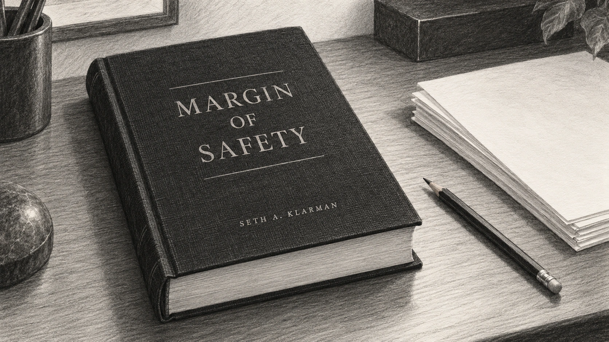

Seth Klarman was born in New York on 21 May 1957, and when he was six the family moved to the Mount Washington district of Baltimore, close to the Pimlico racecourse, where his father, Herbert Klarman, was a health economist at Johns Hopkins University and his mother a psychiatric social worker. His parents separated soon after the move, and he is reported to have purchased his first share, in Johnson & Johnson, at the age of ten, although these details come from later profiles rather than from his own writing.
He read economics at Cornell University and graduated magna cum laude in 1979, by which time he had already found the kind of investing he wanted to do, because in the summer after his third year he had worked at Mutual Shares in New York, the fund run by Max Heine with Michael Price, and after graduating he went back there for around 18 months. Max Heine, in Seth Klarman's later description, "was a great analyst and a brilliant investor—and he was a very kind man", while Michael Price taught him something more specific. "To tirelessly pull threads is the lesson that I learned from Mike Price," says Mr Klarman.
He graduated from Harvard Business School in 1982 as a Baker Scholar, and the firm he has run ever since was formed in May of that year, before he had properly left Cambridge. William Poorvu, an adjunct professor at the school with money to invest after selling a stake in a local television station, set up a firm with three associates, Howard Stevenson, Jordan Baruch and Isaac Auerbach, so that the name Baupost is made up of letters from their surnames, and because they had around $27m between them and needed somebody to manage it, they hired the 25-year-old on a salary of $35,000. "It turns out that value investing is something that is in your blood," he said in an interview with the school in 2008, by which time the firm had grown from three employees to around 100.
The purpose of the firm shaped its method, because the founding families wanted their wealth protected and grown over generations rather than maximised in any one year, which is still how the firm describes itself. Seth Klarman took the value approach he had learned at Mutual Shares, which meant purchasing securities for less than a conservative estimate of what they were worth, and applied it wherever he could find a mispricing, so that Baupost came to invest in public and private equities, in the debt of bankrupt and distressed companies and in property, preferring situations where a reorganisation or a sale would cause the value to be realised, while cash was what was left over when nothing met the standard.
For most of its history Baupost has reported only to its own clients, but for eleven years there was a public window, because in December 1990 the firm launched the Baupost Fund, a registered mutual fund that had to file audited accounts and letters with the Securities and Exchange Commission. The fund was small, with net assets of $120m to $153m in its later years, but the filings show the method at work, because in the year to October 1998 it lost 16.3%, and in his letter that December Seth Klarman wrote that "in the absence of appropriate opportunities, we will hold increased levels of cash", which stood at 30% of assets and was rising. By April 1999 cash was 42% of the fund, and he told shareholders that "we would rather be overly cautious and forego some profit than overly optimistic and potentially much poorer."
That caution had a cost which the filings also record, because from its launch in December 1990 to October 2000 the Baupost Fund returned 13.19% a year after fees, whereas the S&P 500 returned 18.78% a year, which was underperformance in a very strong market rather than a loss of money, and the trade that Seth Klarman had chosen in advance. By April 2001, after the technology bubble had burst, the fund held 48.6% in cash, and Mr Klarman wrote that "price matters, trees don't grow to the sky, high risk does not necessarily correlate with high return". The trustees voted in July 2001 to wind up the fund, and it was liquidated on 31 October 2001, having gained 22.5% in its final year, so that no audited public record of a Baupost vehicle exists after that date.
In 1991 Seth Klarman published the one book he has written, "Margin of Safety: Risk-Averse Value Investing Strategies for the Thoughtful Investor", after a business-school classmate at HarperCollins asked him to write it. It was priced at $25 and sold around 5,000 copies before going out of print, and because it has never been reprinted, the cheapest copy on Amazon in 2015 was listed at just under $1,400 and new copies at around $2,900. The book is sceptical of index funds, and when Jason Zweig asked him about this in 2010 he had not changed his mind. "I still think indexing is a horrendous idea for a number of reasons," said Mr Klarman.

The firm grew slowly by the standards of the hedge fund industry, so that by 2004 Baupost was running around $4.6bn across nine funds that were closed to new investors, having made 22.86% net in 2003, largely from distressed debt. Seth Klarman held 40% to 50% of the firm's assets in cash through 2006 and 2007, which looked excessive until the crisis of 2008, when Baupost opened its funds to new money for the first time in eight years and raised around $4bn, mainly from foundations and university endowments. Baupost's funds lost between 7% and the low teens in 2008, and by December that year the firm's cash, which had been 40% to 50% of more than $14bn, had been cut in half as it purchased what others were forced to sell. Asked in 2010 whether buying had been hard, Seth Klarman replied: "You may be skeptical of my answer, but, yes, it was easy."
However, the firm had still lost money, and in the letter that reviewed 2008 for his clients Seth Klarman set out twenty lessons that he believed investors should have learned and ten that he believed they had wrongly learned instead, among them the line that "risk is not inherent in an investment; it is always relative to the price paid", which restates the argument of his 1991 book. His account of how the firm positions itself has barely changed since. "We are never fully invested if there is nothing great to do," he told the CFA Institute's conference in 2010, when Baupost held around 30% cash, and "we would rather underperform in a huge bull market than get clobbered in a really bad bear market."
The years after 2008 were the firm's largest, with Baupost's funds reported to have gained around 27% in 2009 and its assets reaching $23.4bn by the end of 2010, and Seth Klarman's response was to give money back. At the end of 2010 Baupost returned 5% of its assets to clients because, as Mr Klarman told them, "Baupost's opportunity set is smaller than it has been in some years, while our cash balances have grown", and although it took in new money again in 2011 and opened a London office, it returned around $4bn more at the end of 2013, only the second such return in its history. His co-portfolio manager, Herb Wagner, left in 2012, and Jim Mooney, who had joined the firm in 2000, was promoted and is now Baupost's president.
Figures for Baupost's performance in these years come from the firm's own letters as reported by journalists, and none of them is audited in public, so that when Bloomberg reported in 2010 that the firm had returned 19% a year, net of fees, since 1983, against 11% for the S&P 500, or when the 20% a year since inception often quoted for Seth Klarman is repeated, these are figures that made his reputation but cannot be checked.
The years that followed were harder, because Baupost's partnerships fell by a mid-single-digit percentage in 2015, and in 2018 a late sell-off left them roughly flat, with Mr Klarman writing that "investment profits were negated in a punishing final month". Bloomberg calculated in January 2025 that the firm had averaged around 4% a year since 2014, well behind the US market, and that clients had withdrawn around $7bn over three years, taking assets from $28.8bn at the end of 2021 to around $23bn. Putting this another way, the firm lost money in only three of those ten years and never by more than 5%, so that this was a long period of trailing a rising market rather than a loss of capital, which Seth Klarman had always said he would accept, although a fall in assets measures client decisions as much as returns.
In June 2024 Baupost made what Bloomberg called the largest restructuring in its 42-year history, cutting 11 of its 59 investment staff from the property and equity teams, having already closed its London office in late 2020. Seth Klarman told clients that the firm would concentrate on distressed debt, special situations, event-driven equities and private investments, writing that "this is where we expect to find the most compelling investments", and by early 2025 credit made up around a quarter of the firm's assets while cash had fallen to around 10%, and the firm had gained around 10% in 2024, its first double-digit year since 2021.
Throughout this period Seth Klarman kept writing about the method, because he wrote the introduction to the sixth edition of Graham and Dodd's "Security Analysis" in 2008 and edited the seventh in 2023, by which time he was prepared to say that the authors' emphasis on book value "may have been supplanted by newer metrics". He also gave a rare account of his own weaknesses, telling Institutional Investor that "the analyst needs to fall in love with positions — I just date the ideas", before conceding that he had sometimes held losing positions for too long. "Stocks never owe you," said Mr Klarman.
Away from the firm, he is a partner in the ownership group of the Boston Red Sox, and in February 2012 he put up the money for The Times of Israel, an English-language online newspaper, as its chairman, pledging his share of any gains to charity. He and his wife, Beth, co-chair the Klarman Family Foundation, and he has sat on the board of the Broad Institute in Cambridge, Massachusetts, since its formation in 2009, becoming chairman on 17 July 2025. He was elected to the American Academy of Arts and Sciences in 2020, teaches at Harvard Business School, and owns racehorses through Klaravich Stables.
![Seth Klarman: what the public record shows. Public Baupost Fund returns and cash snapshots, a matched since-launch benchmark comparison, and separate firm-asset observations. Sources: Baupost Fund SEC reports cited in the article; firm assets from the article’s dated secondary sources. Fund returns in US dollars, after fees. Missing annual benchmark values are not invented. The public fund held at most about $153m; its audited record cannot stand in for the private partnerships. Assets include flows.](images/08-04.webp)
As of October 2026 Seth Klarman, now 69, remains chief executive and portfolio manager of Baupost, and no public announcement about his succession or retirement has been made, although Jim Mooney's promotion to president is the visible part of whatever plan exists. He has run one firm for 44 years without ever publishing a return, so that what can be verified is the founding capital, the assets at various dates, the audited record of one small fund in the 1990s and his own words, which have barely changed since 1991.
The record
| Date | Verifiable fact | Source |
|---|---|---|
| May 1982 | Baupost formed with around $27m from its founding families; Seth Klarman, aged 25, hired to manage it | Harvard Business School interview, 2008; Institutional Investor, 2004 |
| December 1990 | The Baupost Fund, a registered mutual fund, launched on 14 December | SEC filings |
| October 2000 | Baupost Fund return since launch 13.19% a year after fees, against 18.78% for the S&P 500 | SEC filing, annual report to 31 October 2000 |
| October 2001 | Baupost Fund liquidated on 31 October; last audited public record | SEC filing, annual report to 31 October 2001 |
| 2004 | Around $4.6bn across nine funds, closed to new investors | Institutional Investor, August 2004 |
| Early 2008 | Funds reopened; around $4bn raised | Institutional Investor, October 2011 |
| December 2008 | More than $14bn | Harvard Business School interview, December 2008 |
| End 2010 | $23.4bn; 5% of assets returned to clients | Institutional Investor, October 2011 |
| End 2013 | Around $4bn returned to clients | Institutional Investor, December 2013 |
| End 2021 | $28.8bn | Bloomberg, via Hedgeweek, January 2025 |
| December 2023 | $23bn | Bloomberg, via InvestmentNews, June 2024 |
| January 2025 | Around $23bn; around $7bn withdrawn over three years | Bloomberg, via Hedgeweek, January 2025 |
The Baupost Fund's audited returns, for years to 31 October, were 11.06% in 1994, 7.91% in 1995, 22.51% in 1996, 27.04% in 1997, −16.30% in 1998, 8.29% in 1999, 22.43% in 2000 and 22.54% in 2001, after fees and expenses of 2% to 2.6% a year. The fund never held more than around $153m and was a small part of Baupost, so these figures are not the firm's record. No audited public return series exists for Baupost's partnerships, which are private, and the figures widely quoted for Seth Klarman, including around 19% to 20% a year since 1982 or 1983, around 4% a year from 2014 to 2024 and the losses of 7% to the low teens in 2008, are secondary, taken from client letters as reported by Bloomberg, Institutional Investor and others. They are not forecasts, and the growth and decline in the firm's assets reflect client inflows and outflows as well as returns.
Life in dates
- 1957Born in New York on 21 May.
- 1963Family moves to the Mount Washington district of Baltimore.
- 1979Graduates from Cornell University in economics, magna cum laude; works at Mutual Shares in New York for around 18 months.
- 1982Graduates from Harvard Business School as a Baker Scholar; Baupost formed in May with around $27m, with Seth Klarman managing the investments.
- 1990The Baupost Fund, a registered mutual fund, launches on 14 December.
- 1991"Margin of Safety" published by HarperCollins at $25.
- 1998The Baupost Fund loses 16.3% in the year to October.
- 2001The Baupost Fund's trustees vote in July to liquidate; the fund is wound up on 31 October. Baupost moves from Cambridge to Boston in November.
- 2004Baupost runs around $4.6bn across nine closed funds. Read the Footnotes, a Klaravich Stables horse, runs in the Kentucky Derby.
- 2008Funds reopen to new money and raise around $4bn; the funds lose between 7% and the low teens for the year. Writes the introduction to the sixth edition of "Security Analysis". Becomes a minority partner in the Boston Red Sox ownership group (some reports date the stake to 2009).
- 2009Joins the board of the Broad Institute at its formation.
- 2010Returns 5% of assets to clients at the year end; interview with Jason Zweig published in the Financial Analysts Journal.
- 2011Reopens to new money; opens a London office. Receives the Harvard Business School Alumni Achievement Award.
- 2012The Times of Israel launches in February with Seth Klarman as chairman. Co-portfolio manager Herb Wagner leaves in October.
- 2013Returns around $4bn to clients at the year end.
- 2015Baupost's partnerships fall by a mid-single-digit percentage.
- 2018A late sell-off leaves the partnerships roughly flat for the year.
- 2020Elected to the American Academy of Arts and Sciences; London office closed late in the year.
- 2023Edits the seventh edition of "Security Analysis".
- 2024Cuts 11 of 59 investment staff in June; the firm gains around 10% for the year.
- 2025Bloomberg reports around $7bn of client withdrawals over three years and returns of around 4% a year since 2014. Becomes chairman of the Broad Institute on 17 July.
- 2026Remains chief executive and portfolio manager of Baupost as of October; no succession announcement has been made.
Sources
- Baupost: Seth A. Klarman: current role, Cornell, Harvard Business School, Mutual Shares, boards, American Academy election, teaching.
- Baupost: About: founding by four families in 1982 and their purpose; Jim Mooney as president.
- Broad Institute: Seth Klarman biography: firm formed May 1982, investment approach, seventh edition of "Security Analysis", Alumni Achievement Award 2011.
- Broad Institute press release, 17 July 2025: board chairmanship, board membership since 2009, Klarman Cell Observatory 2012.
- The Baupost Fund, annual report to 31 October 1998 (SEC): 1998 loss, cash levels, "increased levels of cash" quotation, launch date.
- The Baupost Fund, semi-annual report to 30 April 1999 (SEC): 42% cash, "overly cautious" quotation.
- The Baupost Fund, annual report to 31 October 2000 (SEC): life-of-fund return 13.19% against 18.78% for the S&P 500, 2000 return, "any price" quotation.
- The Baupost Fund, semi-annual report to 30 April 2001 (SEC): 48.6% cash, "price matters" quotation.
- The Baupost Fund, annual report to 31 October 2001 (SEC): liquidation vote of 19 July 2001, wind-up on 31 October 2001, audited returns 1997 to 2001, expense ratios.
- The Baupost Fund, application for deregistration, November 2001 (SEC): move from Cambridge to 10 St James Avenue, Boston, effective 26 November 2001.
- Seth Klarman and Jason Zweig, "Opportunities for Patient Investors", Financial Analysts Journal, September/October 2010: Heine and Price quotations, 30% cash, "never fully invested", "underperform in a huge bull market", "yes, it was easy", indexing.
- Harvard Business School interview with Seth Klarman, December 2008 (repost at Market Folly): Poorvu, $27m, age 25, $35,000 salary, "in your blood", cash halved from 40% to 50% of more than $14bn, 20% a year over 26 years (secondary repost of the school's interview).
- Institutional Investor, "The bucks stop here", 9 August 2004: Mutual Shares 18 months, $27m, $4.6bn across nine funds, 2003 return, Klaravich Stables.
- Institutional Investor, "Klarman won't be worried by Baupost's poor performance", 15 November 2010: 2008 losses of 7% to the low teens, 2009 gain of around 27%, 19% annualised since 1983 for the oldest partnership, cash of 40% to 50% in 2006 and 2007, "opportunity set is smaller" quotation.
- Institutional Investor, "Is Klarman's Baupost seeking cash from investors?", 18 October 2011: $23.4bn at end 2010, 5% returned, $4bn raised in early 2008, Mutual Shares, Poorvu.
- Institutional Investor, "Seth Klarman's Baupost to return some capital to clients", 11 September 2013 and "Baupost to return $4 billion", 3 December 2013: the 2013 capital return and its being the second in the firm's history.
- Institutional Investor, "After a tough year, Klarman accentuates the negative", 27 January 2016: mid-single-digit decline in 2015.
- Institutional Investor, "Punishing December takes toll on Seth Klarman's Baupost Group", 25 January 2019: 2018 result and quotation.
- Institutional Investor, "Seth Klarman on what makes a value investor...", 10 August 2023: seventh edition, "date the ideas", "stocks never owe you", book value quotation.
- Opalesque, 30 October 2012: Herb Wagner's departure and Jim Mooney's promotion.
- Bloomberg, "The Financial Life: Seth Klarman", 17 June 2010: 19% a year net since 1983 against 11% for the S&P 500, $22bn.
- InvestmentNews (Bloomberg), "Boston hedge fund cuts 19% of investing team", 28 June 2024: 11 of 59 staff, $23bn, strategy quotations, London office closure.
- Hedgeweek (Bloomberg), "Baupost clients pull $7bn over past three years", 23 January 2025: $28.8bn to $23bn, 4% a year since 2014, three losing years none worse than 5%, 10% gain in 2024, credit and cash weights.
- McGraw-Hill, "Security Analysis", sixth edition: published August 2008; Klarman wrote the introduction.
- Chief Investment Officer, "Would Seth Klarman buy his own book?", 7 September 2015: $25 cover price, around 5,000 copies, 2015 second-hand prices, HarperCollins classmate.
- Quartz, "How Margin of Safety gained a cult following", 12 July 2018: 1991 publication, 2018 second-hand prices.
- The Motley Fool, "4 lessons you should never forget", 9 March 2010: the twenty lessons of 2008, "risk is not inherent" and "dangerous illusion" quotations (secondary; the letter itself is private).
- Seth Klarman, "A note from the chairman", The Times of Israel, 12 February 2012: his role and pledge of gains to charity.
- Boston Red Sox: ownership: Seth Klarman listed as a partner.
- Sportico, 2021: Red Sox stake of around 4%, dated to 2009 (secondary).
- Wikipedia: Seth Klarman and Wikipedia: The Baupost Group: birth date and place, Baltimore childhood, parents, first share, the four founders' names and the origin of the firm's name, London office opening in 2011 (last resort; these cite Institutional Investor's 2012 profile "The value of Seth Klarman", which is behind a paywall).